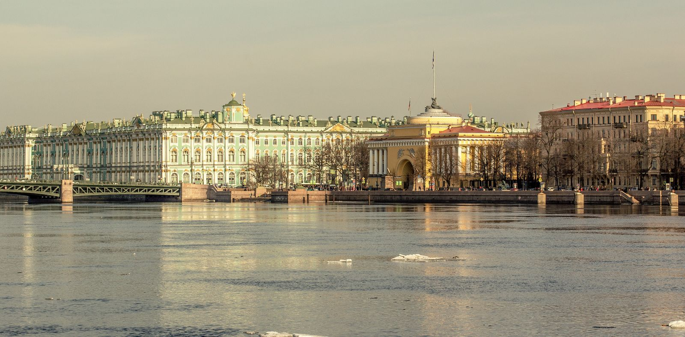
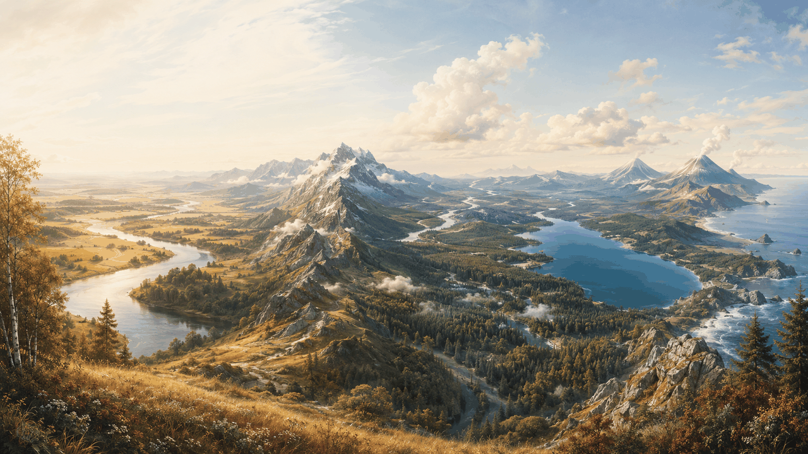
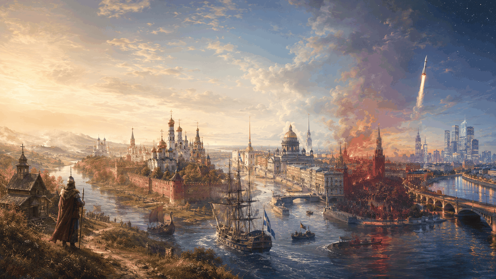
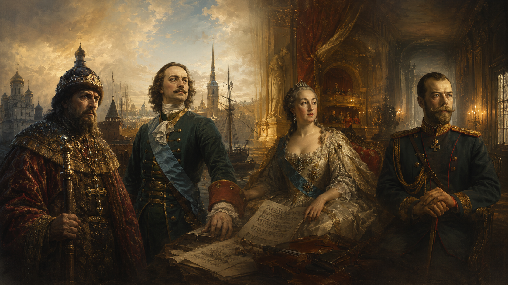
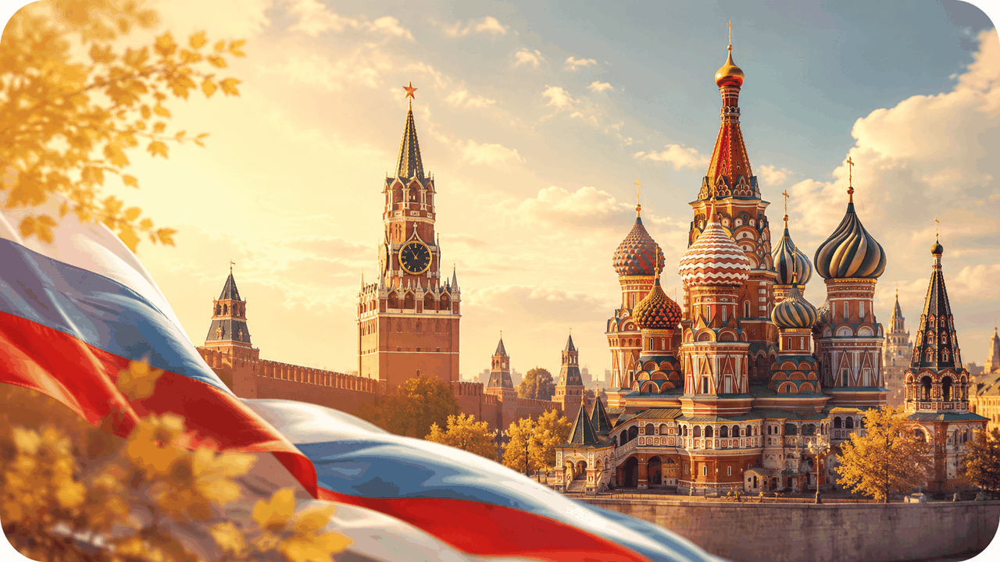
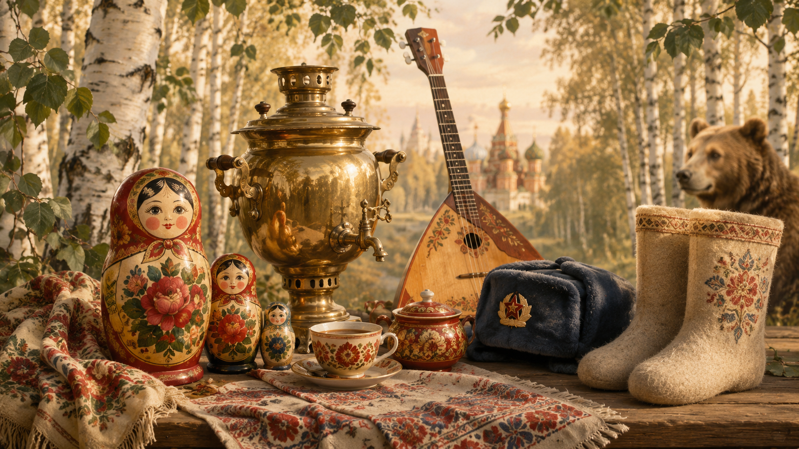
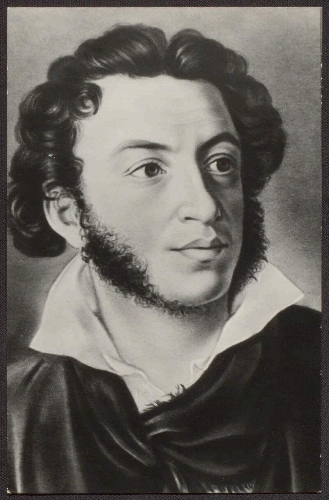
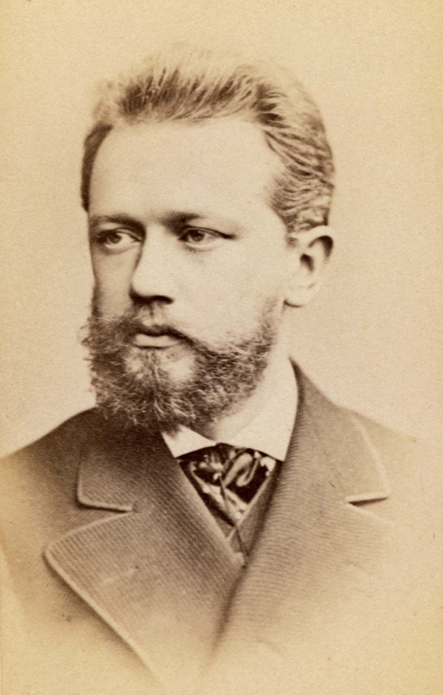
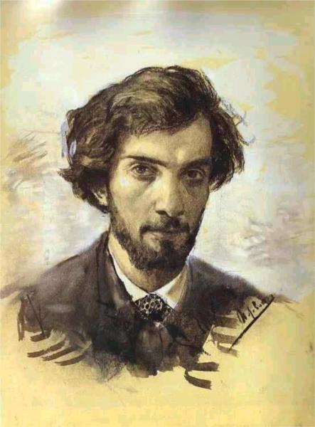
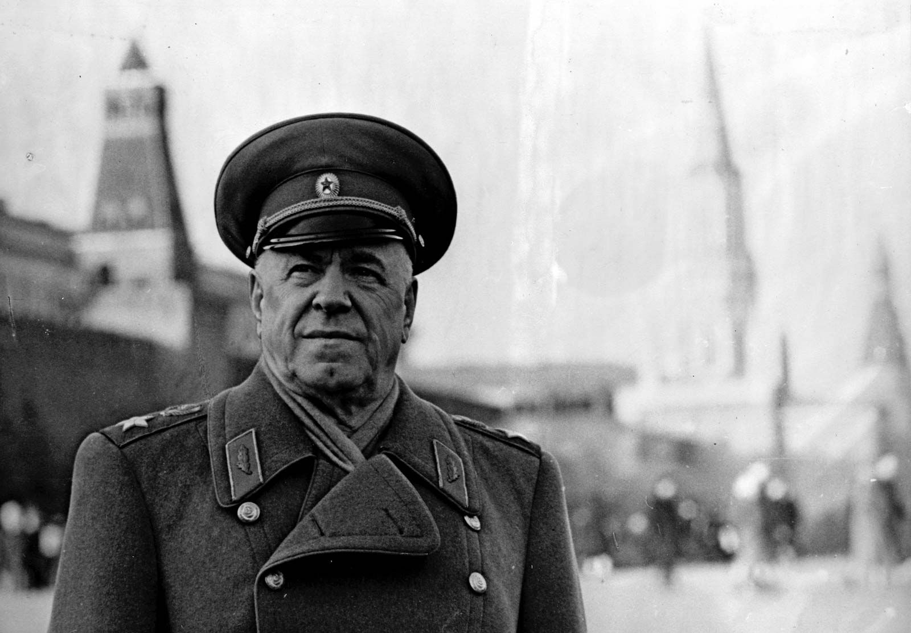

Geography · history · symbols · famous Russians · "Swan Lake" · holidays · OGE Letter Task 35 · Speaking. Full B1+ trainer on Russia in OGE format.
Read the passage · then match the 8 facts with their descriptions.

Reading + match · 8 pairsRussia is the largest country in the world, located on two continents: Europe and Asia. Its rich history and unique culture have been formed over many centuries. We, the people of Russia, are proud of its nature, from the majestic forests of Siberia to its bustling cities.
Our country has made a tremendous contribution to world science, literature, and art. Russia is the homeland of geniuses such as Pushkin, Tolstoy, and Tchaikovsky.
We love our country for its spiritual strength, diversity of traditions, and the hospitality of its people. Despite a complex history, Russia continues to develop and preserve its uniqueness.
Tap a fact on the left — then its description on the right.
Decide which statements are True / False. No penalty for mistakes — try them all.
Tap a word from the bank · then a gap.

11 gaps · word bankRussia is __, known for its incredible __ and vast territory spanning multiple __. It comprises 85 regions united into 9 federal districts.
Key cities include Moscow and St. Petersburg, along with __ like Novosibirsk in Siberia, Yekaterinburg in the Urals, and the Pacific port of Vladivostok.
Significant mountain __ stretch across the country: the Caucasus with Mount Elbrus as Europe's __, the Ural Mountains separating Europe from Asia, and the Southern Siberian ranges.
Major river systems define Russia's __: the Volga in European Russia, while Siberia is crossed by the great Ob, Yenisei and Lena __ to the Arctic Ocean.
Russia's __ include the world's deepest Lake Baikal. The climate ranges from severe __ in the north to subtropical warmth along the Black Sea coast, with predominantly __.
Key historical events + four iconic rulers.

Timeline + bio cards
Official + unofficial symbols. Tap any card to see the meaning.


Read each short biography aloud. Then say which fact was new to you.




Read the text · answer True / False / Don't know · then form 9 questions.
"Swan Lake" is one of the best-loved ballets the world over, and it is very difficult to imagine that its first performance in 1877 was not a success.
Since that time, however, the ballet has won the hearts of ballet lovers. "Swan Lake" is a powerful story of the love of a Prince for the beautiful Odette, transformed by a wicked magician into a swan.
Set to Tchaikovsky's immortal music, "Swan Lake" offers an evening of passion and beauty, leaving an unforgettable impression.
The St Petersburg Ballet Theatre now makes its first appearances in Scotland, visiting Edinburgh, Glasgow and Aberdeen. The beautiful Russian city of St Petersburg is the place where Russian Classical Ballet was born. The city has produced some of the world's greatest ballet dancers. The St Petersburg Ballet Theatre was founded in October 1994 by Konstantin Tatchkin.
Many members of this young company came to the Theatre from the Ballet Academy of Vaganova and other leading Russian ballet companies. Now this Theatre includes over eighty dancers, musicians and technicians.
Answers given · write the question that would produce each answer.
Match each holiday with its description.
Choose the · a · or zero article (–) before each place / object.
Transform the word in CAPS to fit grammatically and lexically.
Put the verb in brackets into the correct tense (across all main tenses).
Type the right Russia-themed word in each gap.
1.5 min preparation · 2 min reading. Press 🔊 for a model · then record your own.
Moscow is the capital and the largest city of Russia. The city stands on the Moskva River in Central Russia, with a population estimated at over 13 million residents. It is one of the world's largest cities, being the most populous city entirely in Europe. Moscow is not only the political but also the cultural and economic centre of Russia. It is famous for the Kremlin, Red Square, the Bolshoi Theatre, and many other attractions. Millions of tourists come here every year to enjoy its history, architecture and modern life.
Reply to James about Russia · 100–120 words · standard letter format.
… My friend was very impressed by the Moscow Kremlin. He said that Russian architecture is fascinating. I'd like to go to Russia for my holidays, too.
How do you usually spend your holidays? What is the best season for travelling in Russia and why? What tourist attractions would you recommend seeing in your country? …
2-minute talk on Russia · use the 3 prompts below.
"Imagine you are doing a project «Russia, my homeland». You have found some information and would like to share it with your friends."
Speak about: